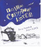

Полное собрание котов

Ура! Ура! Ура-а-а!!! Наконец под знаменем котов организовано полное собрание «кошачьих» сочинений известного детского поэта Андрея Усачёва и заслуженного художника России Виктора Чижикова. В результате своих многолетних наблюдений за кошками, их нравами и привычками эти два талантливых человека создали целую планету пушистых особ, каждая из которых отличается выражением морды, изгибом тела, постановкой лап, длиной усов, положением хвоста и жизненной позицией… Благодаря творческому сотрудничеству Виктора Чижикова и Андрея Усачёва в этой книге сошлись представители различных слоёв кошачьего сообщества: хулиганы и лентяи, спортсмены и музыканты, поэты и художники, мыслители и философы, школьники и пенсионеры... На повестке дня вопросы о кошачьем статусе, кошачьей сытости, кошачьем уюте и обыкновенном кошачьем счастье. Можно с уверенностью заявить, что встреча с котами доставит огромную